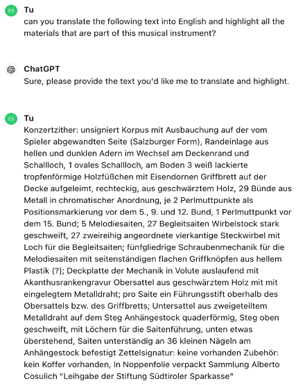
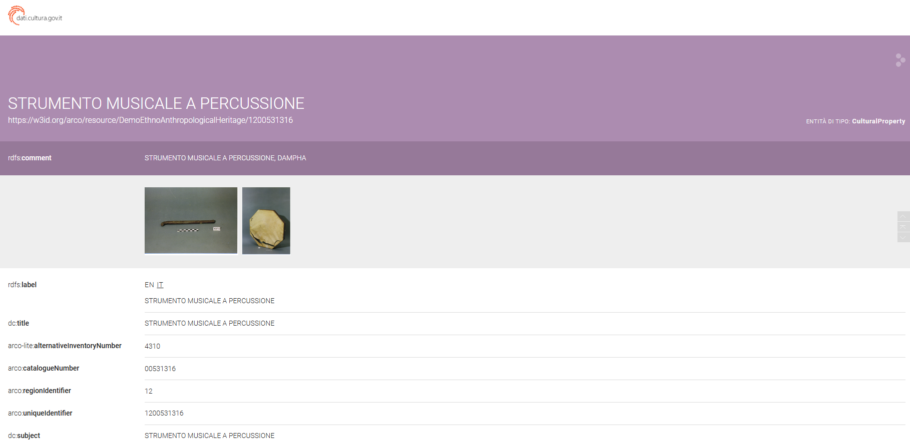

ZITHER
Reading the record of the instrument on ArCo, we observed that despite the missing information about materials, it displays a very wide description (as we can read both in dc:description and core:description). However, since its definition is in German, we tried to translate it with the help of ChatGPT:

As a result, we discovered that the materials that the Zither instrument is made of are wood, iron, metal, plastic, metal wire and mother-of-pearl.
What we would like to propose is to link the musical instrument to the materials it is made of as reported in its description, using the predicate arco-dd:hasMaterial. To specify the exact materials, we based our triples on the list of materials found in ArCo through this query:
PREFIX rdf: http://www.w3.org/1999/02/22-rdf-syntax-ns
PREFIX rdfs: http://www.w3.org/2000/01/rdf-schema#
PREFIX arco: https://w3id.org/arco/ontology/arco/
PREFIX arco-dd: https://w3id.org/arco/ontology/denotative-description/
SELECT DISTINCT ?Material ?MaterialOrTechnique
WHERE
{?cp rdfs:label ?label ;
rdf:type arco:CulturalProperty .
OPTIONAL {?cp a-dd:hasMaterial ?Material}
OPTIONAL { ?cp a-dd:hasMaterialOrTechnique ?MaterialOrTechnique}
FILTER(REGEX(?label , "strumento musicale" , "i"))
FILTER (lang(?label) = "it")
}
ORDER BY (?label)
However, as we had to associate 6 materials to one subject, at first we did not know how to correctly establish this relationship. Therefore, we ask the LLMs using the zero-shot prompting technique. Gemini proposed making this association through the key word UNION:


ChatGPT suggested using the semicolon as all materials are related to the same subject (ZITHER):


We preferred ChatGPT’s advice because the UNION could create ambiguity within the triple. We wanted all materials to be related to the instrument, not just some of them. Therefore, we tried to correct the approach of Gemini, explaining that the UNION clause could not be the best alternative to opt for. Thus, it recognized the mistake, and suggested creating individual statements for each material associated with the instrument:
NEW TRIPLE
So, the new triple should be the following one, but we could also create a single triple for each material which the instrument is made of:
SUBJECT
Zither, Zither, strumento musicale:
https://w3id.org/arco/resource/AltoAdige/HistoricOrArtisticProperty/20830PREDICATE
arc-dd:hasMaterial
1 st Object
Legno, filo metallico:
https://w3id.org/arco/resource/AltoAdige/TechnicalCharacteristic/legnofilo-metallico ;2 st Object
Metallo: https://w3id.org/arco/resource/TechnicalCharacteristic/metallo ;
3 st Object
Ferro: https://w3id.org/arco/resource/AltoAdige/TechnicalCharacteristic/ferro ;
4 st Object
Plastica: https://w3id.org/arco/resource/TechnicalCharacteristic/plastica ;
5 st Object
Madreperla: https://w3id.org/arco/resource/TechnicalCharacteristic/madreperla ;
STRUMENTO MUSICALE DI ZIEGLER, I
Similarly, another musical instrument, "Strumento musicale di Ziegler," was missing details about its material. Initially, based on the picture, we assumed it was simply made of wood. However, upon translating the description, using ChatGPT again, we discovered that in addition to wood (likely maple, although uncertain), it features four metal keys, which are faintly visible when zooming in on the photo.
NEW TRIPLE
Therefore, we propose a new triple that specifies the materials which the instrument consists of:
SUBJECT
Strumento Musicale di Ziegler
https://w3id.org/arco/resource/AltoAdige/CulturalProperty/40023768PREDICATE
arc-dd:hasMaterial
1 st Object
Legno: : https://w3id.org/arco/resource/TechnicalCharacteristic/legno ;
2 st Object
Metallo: https://w3id.org/arco/resource/TechnicalCharacteristic/metallo ;
The exact same procedure can be applied to the remaining 6 musical instruments that miss information on materials.
---------------------------------------------------------
Continuing with our project, we created a query specifically focused on percussion musical instruments. The following SPARQL query retrieves all relevant entries from the ArCo dataset, specifically targeting percussion musical instruments according to their Italian labels. As the total number of these instruments in ArCo corresponds to 66, we decided to set a LIMIT of 25 results to retrieve, so that we could have a more detailed point of view.
PREFIX rdf: http://www.w3.org/1999/02/22-rdf-syntax-ns
PREFIX rdfs: http://www.w3.org/2000/01/rdf-schema#
PREFIX arco: https://w3id.org/arco/ontology/arco/
SELECT DISTINCT ?cp ?label
WHERE
{?cp rdfs:label ?label ;
rdf:type arco:CulturalProperty .
FILTER(REGEX(?label , "strumento musicale a percussione" , "i"))
FILTER (lang(?label) = "it")
}
ORDER BY (?label)
LIMIT 25
STRUMENTO MUSICALE A PERCUSSIONE, ANANDA LAHARI
As we explored the website, we delved into various musical instruments, carefully examining their descriptions and images. We opened numerous records to understand the construction and other properties associated with each instrument.

During our exploration, we came across a percussion instrument (Ananda Lahari) that intrigued us due to its unique feature: a knob attached to the main body with a string. This detail, visible in the image, was surprising because the instrument's description did not mention a string or its number of components.
We used the following query to obtain a list of all percussion instruments with their corresponding number of components (if specified):
PREFIX rdf: http://www.w3.org/1999/02/22-rdf-syntax-ns
PREFIX rdfs: http://www.w3.org/2000/01/rdf-schema#
PREFIX arco: https://w3id.org/arco/ontology/arco/
SELECT DISTINCT ?cp ?label ?numberofComponents
WHERE
{?cp rdfs:label ?label ;
rdf:type arco:CulturalProperty .
OPTIONAL {?cp arco:numberOfComponents ?numberofComponents }
FILTER(REGEX(?label , "strumento musicale a percussione" , "i"))
FILTER (lang(?label) = "it")
}
ORDER BY (?label)
Unlikely other instruments that displayed their components, the Ananda Lahari (_299) did not include the knob that yet is visible in the picture. Also, its structure was very different from the rest of percussion instruments. We hoped that leveraging the knowledge of LLM models could provide additional insights about the cultural property. We asked Gemini and ChatGPT to provide information about their understanding of the specific type of instrument we were interested in, using the Chain-of-Thought prompting technique.
GEMINI


CHAT GPT


Through our inquiries and interactions with the LLMs, we discovered that this instrument is not really a percussion instrument as classified in ArCo, but rather a chordophone. Moreover, ChatGPT explained its typical playing technique, pointing out that the string is usually ‘plucked with a plectrum’. Therefore, we decided to verify the presence of a plectrum, which was not mentioned in ArCo. We also posed more specific questions about the tools used to play the instrument to ChatGPT, as it previously provided more detailed results compared to Gemini.
CHAT GPT


As can be noticed, ChatGPT still classifies the Ananda Lahari as a percussion instrument, even though its playing technique primarily involves the use of strings and tools such a plectrum or a stick.
Hence, we decided to delve deeper into the sources suggested by the LLM (see Methodology ). Therefore, although the instrument incorporates a drum-like body, and it is often associated to the class of percussions, we observed that it is actually a chordophone from to the way it is played, employing a plectrum (or a stick) to produce its sound:


In addition, we look at other reliable websites such as the New York MET (Metropolitan Museum of Art), where we find an example of Ananda Lahari very similar to the one collected on ArCo. This was one of the most important sources we looked at, as it described the instrument as a chordophone, notwithstanding its drum-structure:

Furthermore, out of curiosity, we have also included a Link to listen to how this musical instrument is played. In the video, the instrument is never used as a drum but is always played with a plectrum.
NEW TRIPLES
Considering all the previously mentioned information, what we would like to propose is creating two new triples.
- The first should specify the fact that the Ananda Lahari is not simply a ‘strumento a percussione’ as described in ArCo, but it is a chordophone which includes some characteristics of a drum. It could be defined as a hybrid instrument incorporating both features of chordophones and percussions, but its primary category should be ‘cordofono’. However, this is probably a detail that only an expert could ascertain, so what we can propose is just a suggestion to change or modify its property with the predicate a-dd:hasCulturalPropertyType.
- The second triple should specify the number of components the instrument is made of, which in this case are two if we include the plectrum not represented in the depiction. Thus, we asked to ChatGPT how we could clarify the number of components, and it suggested using the string ‘xsd:integer’:
The corresponding triple could be the following one:
1 st TRIPLE
SUBJECT
Strumento Musicale a Percussione
https://w3id.org/arco/resource/DemoEthnoAnthropologicalHeritage/1200531299PREDICATE
a-dd:hasCulturalPropertyType
OBJECT
Strumento Musicale Cordofono
https://w3id.org/arco/resource/CulturalPropertyType/1a90e198436ad40e505c71f0a63c1a3aOf course this will be only the first step, because we would also need to change the label of the subject and its rdfs:comment, adding a little description. For example, we could change the label like this:
SUBJECT
https://w3id.org/arco/resource/DemoEthnoAnthropologicalHeritage/1200531299PREDICATE
rdfs:label
OBJECT
"Cordofono"
Finally, we could also modify the rdfs:comment and add a core:description where we would define this specific type of instrument, which is a hybrid between a chordophone and a percussion instrument. However, as already clarified, these changes would need to be first verified by experts in the field.
2 nd TRIPLE
SUBJECT
Strumento Musicale a Percussione
https://w3id.org/arco/resource/DemoEthnoAnthropologicalHeritage/1200531299PREDICATE
arco:hasnumberOfComponents
OBJECT
"2"^^xsd:integer
DAMPHA
Continuing our exploration of ethnic percussion musical instruments, we encountered another anomaly: a musical instrument (DAMPHA) depicted with a stick in the image, not having this item indicated in the components. As previously noted, instruments with sticks or plectrums typically have the number of such details included in the components list (refer to the Appendix ).
To double-check this observation, we also ran a query, characterized by the ASK-clause query form, asking whether the percussion instrument Dampha had any component mentioned in its record:
PREFIX rdf: http://www.w3.org/1999/02/22-rdf-syntax-ns
PREFIX rdfs: http://www.w3.org/2000/01/rdf-schema#
PREFIX arco: https://w3id.org/arco/ontology/arco/
ASK {
rdfs:label ?label .
OPTIONAL {
}
According to our analysis, the result retrieved from SPARQL confirmed the missing information:
FALSE
Since we didn’t have much information and documentation relating to this instrument, we preferred employing the LLMs, and we used the Generated Knowledge prompting technique to retrieve some relevant results. Both Gemini and ChatGPT gave us information about the stick, mentioning it as one of the main tools with which the instrument is played.
GEMINI


CHAT GPT
Moreover, continuing with the same prompting technique, we asked them to explain more deeply why sticks can be the main tools used to play the Dampha musical instrument.
GEMINI
CHAT GPT
Thanks to the resource made we can confirm that the stick that is represented in ArCo depiction together with the Dampha was effectively used to play the instrument. Thus, we can propose a new triple that specifies the number of components as ‘2’, using the same string that we have employed in the previous triple regarding the components:
SUBJECT
Strumento Musicale a Percussione
https://w3id.org/arco/resource/DemoEthnoAnthropologicalHeritage/1200531316PREDICATE
arco:hasnumberOfComponents
OBJECT
"2"^^xsd:integer